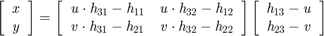

Get XY from UV according to 2D Homography of a projective geometry transform
- Author: WANG Lei,USTB
- Date:2016/3/3
- Algorithom:
Get [ XY ] By solving:

- Inputs:
H----3 by 3 matrix: [h11 h12 h13;
h21 h22 h23;
h31 h32 1]
UV----cordNum by pointNum matrix,
cordNum==2,pointNum>=4,
[u1,u2,...;
v1,v2,...]- Outputs:
XY----cordNum by pointNum matrix,
cordNum==2,pointNum>=4,
[x1,x2,...;
y1,y2,...]function XY = GetXYFromUV(H,UV) % Initial [cordNum, pointNum]=size(UV); if ~(cordNum==2 || cordNum==3) error('Input matrix size error!'); end [hH, wH]=size(H); if hH~=3 ||~(wH==3 || wH==4) error('Input matrix size error!'); end if wH==4 H=[H(:,1:2) H(:,4)]; end XY=ones(2,pointNum,'double'); UV=UV(1:2,:); % Algorithm for i=1:pointNum G=[UV(1,i)*H(3,1)-H(1,1),UV(1,i)*H(3,2)-H(1,2); UV(2,i)*H(3,1)-H(2,1),UV(2,i)*H(3,2)-H(2,2)]; XY(:,i)=inv(G)*[H(1,3)-UV(1,i);H(2,3)-UV(2,i)]; end
Error using GetXYFromUV (line 36) Not enough input arguments.